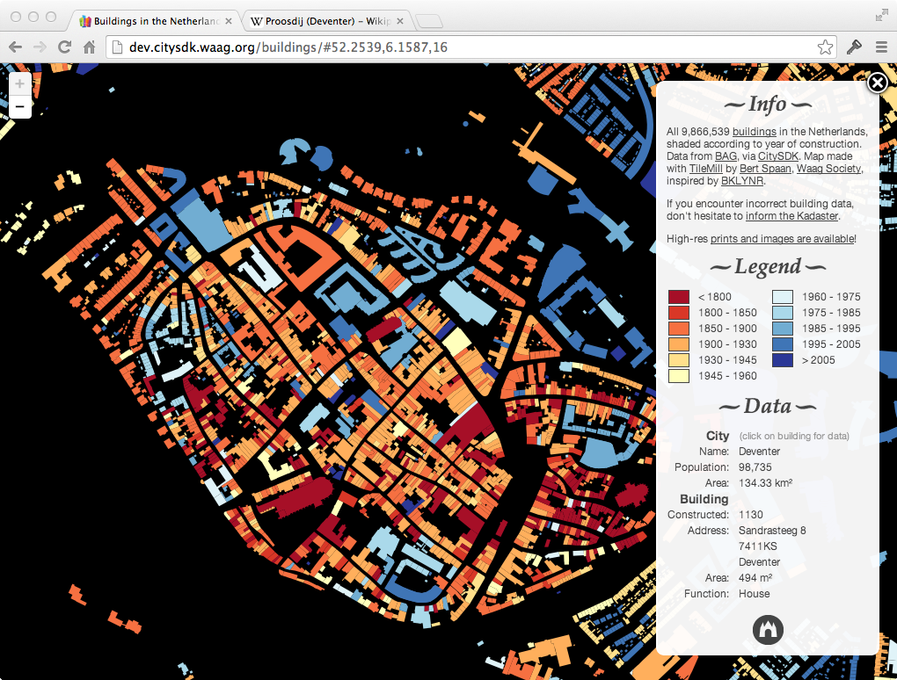

CitySDK:
tons of data
dozens of cities
one API

Data portal
Different silos ● not linked
Different file formats
404 - not found

Different data models & field names

Different data models & field names

Amsterdam Central Station

Wikipedia

DBpedia

Kadaster

OpenStreetMap

Cultural Heritage Site

GVB

Foursquare
Where are schools in my neighbourhood? ●
Which school is the best? ●
How can I get there safest?
Data available, but difficult to answers questions
Code does not scale
CitySDK
23 partners
8 countries
8 cities
Generic APIs using existing backends and data
Developer engagement, hackathons, replication pilots
Three domains
1. Participation
How can I tell my city the street lights are broken?
2. Tourism
What can I do tonight? And where?
3. Mobility
Does my train leave on time? And where can I park my bike?
CitySDK Linked Data API
Concept (1)
Concept (2)

Concept (3)

Public transport stops in the Netherlands

Arts Holland - API

Arts Holland - Map
JSON, RDF/Turtle
Soon: GeoJSON, JSON-LD

SmartCitizenKit

SmartCitizenKit - Website

SmartCitizenKit - CitySDK LD API

Haarlem

Westland
Proosdij Deventer

City Dashboard
ParkShark

OpenTripPlanner
Current research: Link discovery
What's next?
Plaatje Europa met steden
Cities, developers, citizens:
Join us
Factsheet